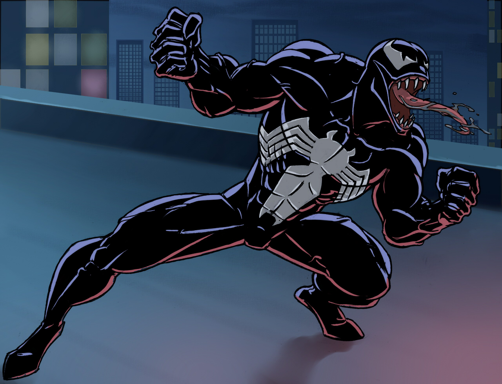
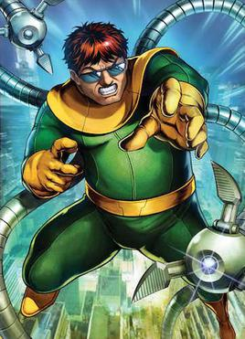
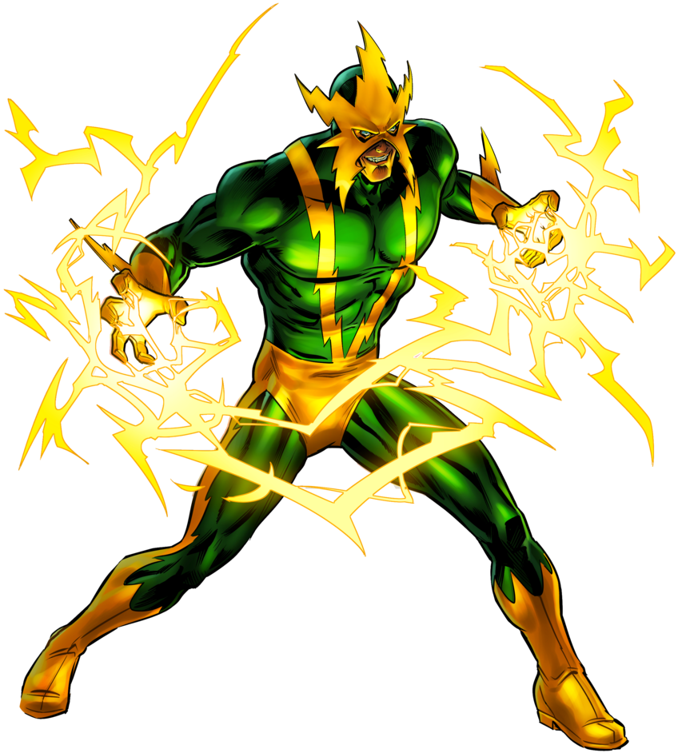

Spider-Man Villians!
Here you can take a look a some of Spidey villians. There is a picture and some info about the character.
Green Goblin
 Norman Osborn (of Earth-616), also known as the Green Goblin,
Iron Patriot, Super-Adaptoid, Goblin King and Red Goblin; was the co-founder and former CEO of Oscorp, the former leader of the Avengers,
the former director of H.A.M.M.E.R., and former leader of the Goblin Underground.
Norman has battled Spider-Man numerous times over the years and has become Spider-Man's greatest enemy. .
Norman Osborn (of Earth-616), also known as the Green Goblin,
Iron Patriot, Super-Adaptoid, Goblin King and Red Goblin; was the co-founder and former CEO of Oscorp, the former leader of the Avengers,
the former director of H.A.M.M.E.R., and former leader of the Goblin Underground.
Norman has battled Spider-Man numerous times over the years and has become Spider-Man's greatest enemy. .
Venom
Venom is a symbiote. Brock is the man who adquired the powers
of the symbiote.
{kind=link}
Dr. Octopus
Best known as Otto Octavious. He's a great scientist
who adquire robotic tentacles, and is a great villian of spider-man.
{kind=link}
Electro
Max is a former electrical engineer at Oscorp who had
idolized Spider-Man, but was transformed into an extremely powerful living electric capacitor after a freak accident, growing power-hungry and
obsessed with defeating and killing his former idol. .
{kind=link}
Morbious
Dr. Michael Morbius, Ph.D., M.D., better known as Morbius
is an anti-heroic antagonist from Marvel Comics, serving as an enemy to Spider-Man, Blade, and Ghost Rider. He was a biogenetic scientist who was
dying of a blood-destroying disease. He injected himself with radioactively altered vampire bat DNA, and it transformed him into a living vampire.
Morbius developed a craving and need for human blood, especially the radioactive blood of Spider-Man, which he thought would cure his never-ending hunger. .
{kind=link}
Sandman
 Flint Marko is a professional criminal who accidentally kills Peter
Parker's uncle, Benjamin "Ben" Parker. Sandman is seen as a tragic villain because he is portrayed as a decent man who only breaks the law in order
to afford the care his cancer-stricken daughter desperately needs. However, his powers and methods in order to do so makes him one of Spider-Man's
most dangerous foes. Flint Marko's main weapon of choice was his own body, which he distorted to fit whatever purpose he wanted, although his main
firearm was a Colt Python .357 Magnum revolver, which he used in his robberies prior to getting his powers. .
Flint Marko is a professional criminal who accidentally kills Peter
Parker's uncle, Benjamin "Ben" Parker. Sandman is seen as a tragic villain because he is portrayed as a decent man who only breaks the law in order
to afford the care his cancer-stricken daughter desperately needs. However, his powers and methods in order to do so makes him one of Spider-Man's
most dangerous foes. Flint Marko's main weapon of choice was his own body, which he distorted to fit whatever purpose he wanted, although his main
firearm was a Colt Python .357 Magnum revolver, which he used in his robberies prior to getting his powers. .
Scorpion
MacDonald "Mac" Gargan, better known by his alias Scorpion,
is a supporting antagonist in the 2018 Insomniac Games videogame Marvel's Spider-Man, and a mentioned antagonist in its 2020 spin-off Marvel's Spider-Man:
Miles Morales. He is an adaptation of the Marvel Comics supervillain of the same name, but is also a somewhat more sinister take on the character. .
{kind=link}